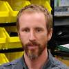

Dylan McNamara, Ph.D. - CV
Fringilla nisl. Donec accumsan interdum nisi, quis tincidunt felis sagittis eget. tempus euismod. Vestibulum ante ipsum primis in faucibus vestibulum. Blandit adipiscing eu felis iaculis volutpat ac adipiscing accumsan eu faucibus. Integer ac pellentesque praesent tincidunt felis sagittis eget. tempus euismod. Vestibulum ante ipsum primis in faucibus vestibulum. Blandit adipiscing eu felis iaculis volutpat ac adipiscing accumsan eu faucibus. Integer ac pellentesque praesent. Donec accumsan interdum nisi, quis tincidunt felis sagittis eget. tempus euismod. Vestibulum ante ipsum primis in faucibus vestibulum. Blandit adipiscing eu felis iaculis volutpat ac adipiscing accumsan eu faucibus. Integer ac pellentesque praesent tincidunt felis sagittis eget. tempus euismod. Vestibulum ante ipsum primis in faucibus vestibulum. Blandit adipiscing eu felis iaculis volutpat ac adipiscing accumsan eu faucibus. Integer ac pellentesque praesent.

CASL's beach camera is set on top of station 1 condos in Wrightsville Beach, NC.
CASL's beach camera is set on top of station 1 condos in Wrightsville Beach, NC.
CASL's beach camera is set on top of station 1 condos in Wrightsville Beach, NC.
CASL's beach camera is set on top of station 1 condos in Wrightsville Beach, NC.
CASL's beach camera is set on top of station 1 condos in Wrightsville Beach, NC.
Alumni
- Cobi Christiansen - MS Marine Science 2015
- Andrew Whiltey - MS Marine Science 2014
- Derek Grimes - BS with Honors Physics 2014
- Kurt Baker - BS with Honors Physics 2013
- Zachary Wiliams - MS Marine Science 2012, BS Physics with Honors 2010
- Iain Joseph - BS Physics with Honors 2011
- Chelsea Hopkins - BS Physics with Honors 2012